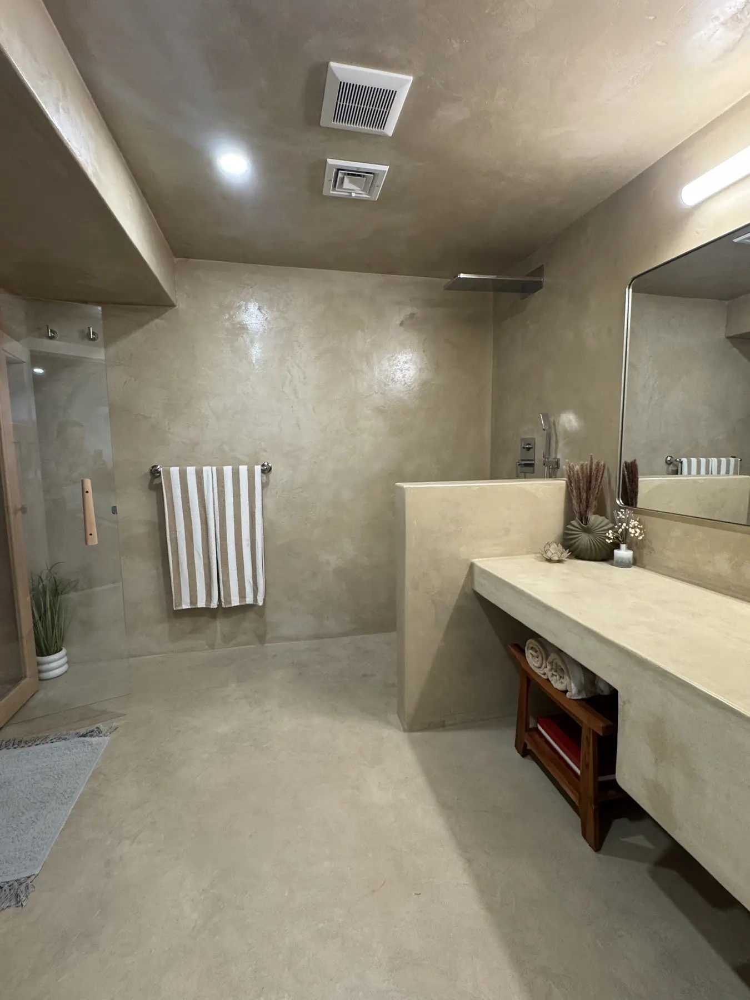

Greater Boston area
Newton's Victorians, Colonials and prewar homes were built with real lath-and-plaster walls and ceilings, and they deserve to stay that way. From Newton Centre to Chestnut Hill and Waban, we restore original plaster and add design-grade finishes without swapping the character of your home for flat drywall.
From urgent repairs to design-grade finishes, here is what we bring to Newton homes and projects:
Many homes here were built with real lath-and-plaster walls and ceilings. When they crack or sag, most contractors want to tear them out for drywall. We repair and restore the original plaster wherever it can be saved, keeping the density, the sound and the character that make these homes what they are. When replacement genuinely is the right call, we tell you so in writing.
Newton's Victorians, Colonials and prewar homes lean heavily on original lath-and-plaster, so cracked and sagging ceilings and settling cracks around doorways are the most common calls here.
Whatever the age of the home, we start by finding out why the plaster failed, not just covering it up, so the repair actually lasts. That means checking for active moisture, settling and past patch jobs before we quote a fixed price in writing.
Every Newton project follows the same clear path, so there are no surprises on the timeline or the bill:
There is no honest flat rate for plaster work, because the price depends on what the walls actually need. The three things that move the number most are the size and condition of the area, whether we are repairing original plaster or installing a premium finish like Venetian plaster, microcement or tadelakt, and how much prep, protection and moisture work the job requires.
Rather than guess, we visit the Newton property in person, look behind the surface where it matters, and put a fixed scope and price in writing before any work starts. That way you can compare quotes on the same terms, and there is never a surprise on the final bill.
Actual before-and-after work from completed projects across Greater Boston and the North Shore.



Based in Malden, we bring the same owner-led plastering, repair and premium finishes to the towns around Newton, including Plastering in Brookline, MA · Plastering in Chestnut Hill, MA · Plastering in Boston, MA. If you are just outside Newton, reach out anyway, we very likely cover you.
Beyond repair and restoration, we bring design-grade finishes to Newton that almost no other local contractor installs: authentic Venetian plaster, seamless microcement, and traditional tadelakt for naturally waterproof showers.
The owner applies these personally, so Newton homeowners get the real hand-troweled finish rather than a painted imitation.
Yes. We work throughout Newton, MA and the surrounding Greater Boston area, from small repairs to full renovations and premium finishes.
Absolutely. Many Newton homes have original lath-and-plaster walls and ceilings. We repair and restore them cleanly rather than tearing them out, and tell you honestly when replacement is the better call.
Yes. We bring premium finishes like Venetian plaster, microcement and tadelakt to Newton, finishes almost no other contractor in the area installs.
We visit in person, explain the right approach, and put the full scope in writing with the price agreed up front. Call or text the owner directly, or request a free estimate online.
Tell us about your project. The owner answers directly, and the scope and price go in writing before any work starts.
Four quick steps. The owner replies within one business day.
Prefer to talk? Call (617) 461-7575
One tap. Your call goes straight to the owner.
Or call now: (617) 461-7575